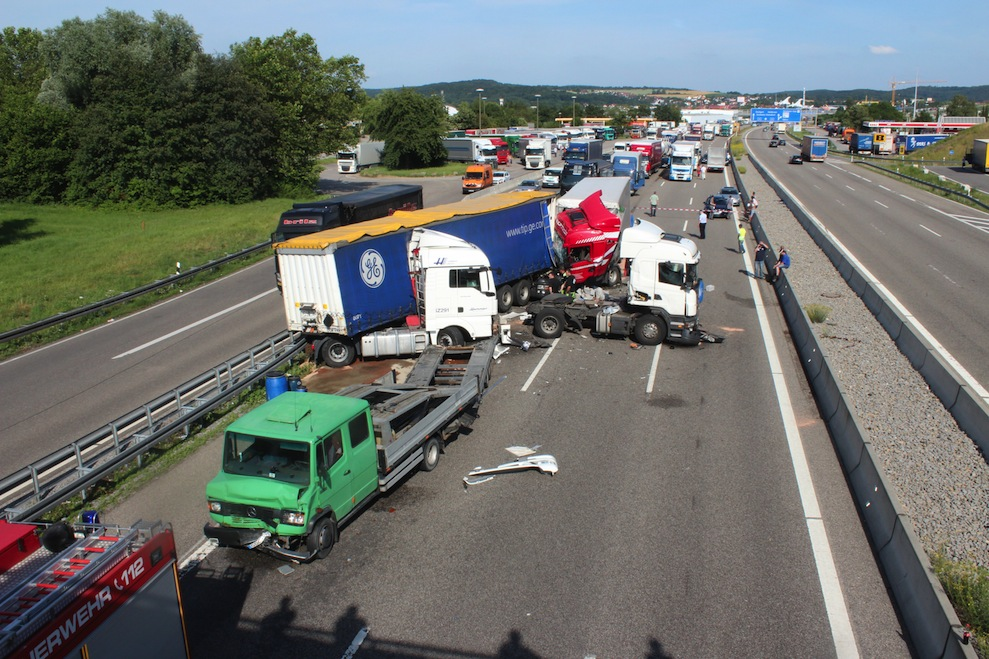

-
Die A6
Unfälle, Baustellen, Staus - Eine Analyse
-
Die A6 als Teil der E50
Die Bundesautobahn 6 (A6) ist die bedeutendste Verkehrsader der Region Heilbronn-Franken - und das Drehkreuz Europas. Sie ist Teil der fast 5000 Kilometer langen Europastraße 50, die Paris mit Prag verbindet und von Brest bis ins russische Machatschkala führt.
"Die A6 hat vor dem Hintergrund der EU-Osterweiterung eine zentrale Bedeutung als Handelsachse. Die Region um Stuttgart gilt als eine der Zentren des deutschen Mittelstands."
Aufgrund dieser wirtschaftlichen Bedeutung ist die A6 eine der am stärksten frequentierten Autobahnen in Deutschland. Das zeigen die Daten aus den Dauerzählstellen an Autobahnen. Mehr als 96.000 Fahrzeuge passieren täglich die A6-Zählstelle in Neckarsulm.
Jedes fünfte Fahrzeug ist dort ein Lkw. Das liegt deutlich über den Durchschnittswerten aller Dauerzählstellen.
Daten: Dauerzählstelle Neckarsulm I und Durchschnitt aller Zählstellen auf Bundesautobahnen, BAST
-

Viele Lkw-Unfälle
Die A6 bei Sinsheim ist eine bekannte Stau- und Unfallstrecke. Auf dem hügeligen Abschnitt behindern behäbige Lkw den Verkehrsfluss. Es kommt immer wieder zu Verkehrsbehinderungen und Auffahrunfällen.
Die Unfallkarte zeigt, dass sich viele Unfälle nach der Anschlussstelle Sinsheim ereignen. In Fahrtrichtung Mannheim gibt es dort eine Fahrbahnverengung von drei auf zwei Spuren. Nach Angaben der Mannheimer Polizei zieht diese viele Auffahrunfälle nach sich.
Die Unfallhäufung an der Fahrbahnverengung zeigt, wie wichtig ein lückenloser sechsspuriger Ausbau ist - gerade auf einer stark befahrenen Autobahn wie der A6.
Sechsspuriger Ausbau der A6 ab 2016 geplant -
-
-
-